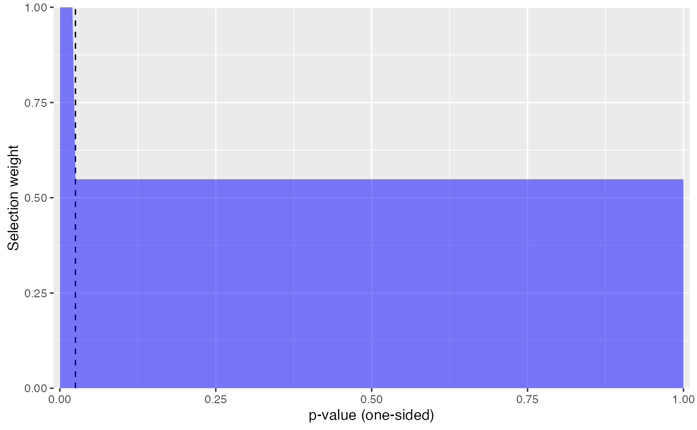
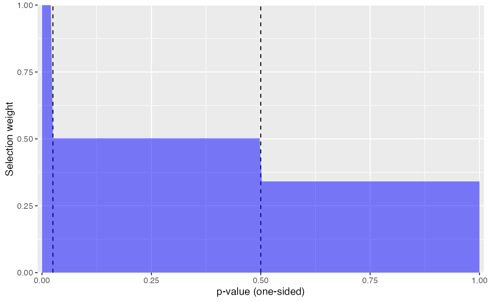
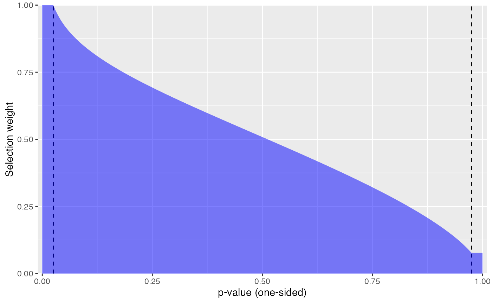

P-Value Selection Models for Meta-Analysis with Dependent Effects
2024-10-07
Source:vignettes/selection_models.Rmd
selection_models.RmdA meta-analysis aims to provide a comprehensive synthesis of available evidence on a topic of interest. One major challenge to this aim is selective reporting of evidence from primary studies. Selective reporting occurs when the statistical significance level of a finding affects whether it is reported and therefore whether the finding is available for inclusion in a meta-analysis. If statistically significant, affirmative results are more likely to be reported compared to null, non-affirmative results, the evidence base available for meta-analysis will be distorted, leading to inflation of effect size estimates from meta-analysis and bias in estimates of heterogeneity.
Because selective reporting makes it difficult to draw accurate conclusions from a synthesis, many tools have been developed that try to detect selective reporting problems and to correct for the biases it creates in meta-analytic summaries. Widely used methods include: graphical diagnostics like funnel plots; tests and adjustments for funnel plot asymmetry such as trim-and-fill, Egger’s regression, and PET/PEESE; selection models; and p-value diagnostics such as p-curve and p-uniform. However, very few methods available for investigating selective reporting can accommodate dependent effect sizes. This limitation poses a problem for meta-analyses in education, psychology and other social sciences, where dependent effects are a very common feature of meta-analytic data.
Dependent effect sizes occur when primary studies report multiple measures of the outcomes or repeated measures of the outcome. Generally, failing to account for dependency can result in misleading conclusions, overly narrow confidence intervals, and hypothesis tests that have inflated type one error rates.
In this package, we provide methods for investigating and accounting for selective reporting based on p-value selection models. The methods account for dependent effect sizes by using cluster-robust variance estimation (i.e., sandwich estimation) or clustered bootstrapping techniques. Simulation results show that selection models combined with robust variance estimation led to low bias in the estimate of the overall effect size. Combining the selection models with cluster-bootstrapping leads to confidence intervals with close-to-nominal coverage rates.
P-Value Selection Models
P-value selection models are a general set of methods that correct
for selective reporting by modeling the process by which the effect size
estimates are reported (Hedges & Vevea,
2006). Selection models have two components: a model
describing the evidence generation process and model describing the
selection process. The metaselection package implements a
very flexible class of selection models, in which the
evidence-generating process follows a random effects location-scale
model (Viechtbauer &
López‐López, 2022) and where the selection process is a
function of one-sided p-values, either in the form of a step function
(Vevea &
Hedges, 1995) or a beta-density function (Citkowicz
& Vevea, 2017). Step function model involves specifying
steps which categorize the p-values into intervals that have different
probabilities of selection (Vevea & Hedges, 1995). The
beta-density model uses a different selection function, based on a beta
distribution, to capture complex patterns of selection (Citkowicz
& Vevea, 2017).
Consider a meta-analytic dataset with a total of studies, where study includes effect size estimates. Let denote an effect size estimate produced by a study, prior to selective reporting. The effect size estimate has standard error , which is treated as a fixed quantity. Let be a row vector of predictors that encode characteristics of the effect size and/or the study and may be related to average effect size magnitude. Let be a row vector of predictors that may be related to effect size heterogeneity. Let denote the standard normal cumulative distribution function and the standard normal density. Finally, let be the one-sided p-value corresponding to the effect size estimate, which is a function of the effect size estimate and its standard error: .
The evidence-generating process
The model for the evidence-generating process is a random effects location-scale model, in which where is a vector of regression coefficients that relate the predictors to average effect size magnitude, is a normally distributed random effect with mean zero and variance , and is a normally distributed sampling error with mean zero and known variance . The variance of the random effects is modeled as where is a vector of coefficients that relate the predictors to the degree of marginal variation in the random effects. If the model does not include predictors of heterogeneity, then and the model reduces to a conventional random effects meta-regression in which .
The selective reporting process
The selective reporting process is defined by a selection function, which specifies how the probability that a given effect size estimate is reported varies depending on its -value. Let be an indicator for whether effect size in study is observed. Then the selection model defines . The distribution of observed effect sizes then corresponds to In the above, the first term in the numerator is defined by the selective reporting process and the second term is defined by the evidence-generating process.
Hedges (1992) and Vevea & Hedges (1995) proposed to model the selective reporting process using a step-function, with thresholds chosen to correspond to “psychologically salient” -values. In the general formulation, we have steps and The selection parameters control the probabilities of selection given a p-value, with parameter defined as the log of the probability that an effect size estimate is observed, given that its p-value is in the range , relative to the probability than effect size estimate is observe, given that its p-value is in the range . We use log-transformed probabilities so that the parameter space is unrestricted, for ; therefore describes a process where effect sizes are reported with uniform probability, regardless of their statistical significance level.
In practice, meta-analysts will often use only a small number of steps in the selection model. One common choice is the three-parameter selection model, which has a single step at . With this choice of threshold, positive effects that are statistically significant at the two-sided level of have a different probability of selection than effects that are not statistically significant or not in the anticipated direction. Another possibility is to use two steps at and , which allows for different probabilities of selection for effects that are positive but not statistically significant and effects that are negative (i.e., in the opposite the intended direction). We call the latter model a four-parameter selection model.
Bootstrapped Confidence Intervals
To improve confidence interval coverage, X (2025) also examined bootstrapping the selection models to obtain the confidence intervals. Bootstrapping involves re-sampling many times from the original data to create an empirical distribution that can be use in place of the sampling distribution to estimate measures of uncertainty (Boos, 2003). X (2025) examined variations of bootstrapping approaches combined with different confidence interval calculations. The results showed that regular cluster bootstrapping with percentile confidence intervals performed the best. The modified selection models combined with this bootstrapping led to close to nominal coverage rates.
Using the metaselection package
We now demonstrate the key functions from the
metaselection package. As a running example, We data from a
meta-analysis by Lehmann, Elliot, &
Calin-Jageman (2018), who
examined the effects of the color red on attractiveness judgments. The
dataset is available in the metadat package (White, Noble, Senior, Hamilton,
& Viechtbauer, 2022) as dat.lehmann2018. It
consists of 81 effect sizes from 41 studies. The following code loads
the dataset and creates variables that will be needed for the subsequent
analysis.
data("dat.lehmann2018", package = "metadat")
dat.lehmann2018$study <- dat.lehmann2018$Full_Citation
dat.lehmann2018$sei <- sqrt(dat.lehmann2018$vi)
dat.lehmann2018$esid <- 1:nrow(dat.lehmann2018) Prelminary Analysis
As a point of comparison, we first run an analysis that ignores the possibility of selective reporting bias but accounts for the dependence structure of the effect sizes using a correlated-and-heirarchical effects working model and cluster-robust variance estimation (Pustejovsky & Tipton, 2022). The following code first creates a sampling variance-covariance matrix assuming that effect size estimates from the same study have sampling errors that are correlated at 0.8; it then fits a correlated-and-heirarchical effects working model and applies robust variance estimation, clustering by study.
library(metafor)
library(clubSandwich)
# Create sampling variance-covariance matrix
V_mat <- vcalc(
vi = vi,
cluster = study,
obs = esid,
data = dat.lehmann2018,
rho = .8,
sparse = TRUE
)
# First CHE working model
CHE_mod <- rma.mv(
yi = yi, V = V_mat,
random = ~ 1 | study / esid,
data = dat.lehmann2018,
sparse = TRUE
) |>
# Apply RVE with small-sample corrections, clustering by study
robust(cluster = study, clubSandwich = TRUE)
CHE_mod##
## Multivariate Meta-Analysis Model (k = 81; method: REML)
##
## Variance Components:
##
## estim sqrt nlvls fixed factor
## sigma^2.1 0.0494 0.2223 41 no study
## sigma^2.2 0.0737 0.2715 81 no study/esid
##
## Test for Heterogeneity:
## Q(df = 80) = 453.5173, p-val < .0001
##
## Number of estimates: 81
## Number of clusters: 41
## Estimates per cluster: 1-6 (mean: 1.98, median: 1)
##
## Model Results:
##
## estimate se¹ tval¹ df¹ pval¹ ci.lb¹ ci.ub¹
## 0.2168 0.0607 3.5695 35.75 0.0010 0.0936 0.3400 **
##
## ---
## Signif. codes: 0 '***' 0.001 '**' 0.01 '*' 0.05 '.' 0.1 ' ' 1
##
## 1) results based on cluster-robust inference (var-cov estimator: CR2,
## approx t-test and confidence interval, df: Satterthwaite approx)The overall estimate of the average effect is 0.217, 95% CI [0.094,
0.34], which is significantly different from zero (p = 0.001). The
estimated total heterogeneity (including both between- and within-study
heterogeneity) is 0.123, corresponding to a total standard deviation of
0.351. Next, we examine how this average effect size estimate differs
from the estimates based on a step-function or beta-function selection
model, fitted using the metaselection package.
Three-Parameter Step Function with RVE
The primary function for fitting p-value selection models is
selection_model(). In the code below, we fit a
step-function selection model to the dat.lehmann2018 data
using the selection_model() function. We specify which
variable is the effect size, yi, and which is the standard
error for the effect size, sei. We indicate that we want to
estimate "step" selection model and specify a single step
at .025 by setting step = 0.025. By default, the function
fits the modeling using composite maximum likelihood estimation and
calculates standard errors and confidence intervals using cluster-robust
variance estimation.
library(metaselection)
mod_3PSM <- selection_model(
data = dat.lehmann2018,
yi = yi,
sei = sei,
cluster = study,
selection_type = "step",
steps = .025
)
mod_3PSM## param Est SE CI_lo CI_hi
## beta 0.133 0.137 -0.136 0.402
## gamma -2.512 1.041 -4.553 -0.471
## zeta1 -0.601 1.123 -2.802 1.601The estimate of the overall average effect is now 0.133, which is over a third smaller than the estimate that does not account for selection bias (0.217). This estimate is no longer statistically distinct from zero, as indicated by the 95% confidence interval [-0.136, 0.402].
The estimates of the total heterogeneity parameter and the selection
parameter are on the log-scale. We can obtain an estimate of the total
variance by setting the argument transf_gamma to
TRUE in the print() method. Similarly, we can
transform the selection parameter estimates to the probability scale by
setting transf_zeta = TRUE:
print(mod_3PSM, transf_gamma = TRUE, transf_zeta = TRUE)## param Est SE CI_lo CI_hi
## beta 0.1328 0.1373 -0.1363 0.402
## tau2 0.0811 0.0845 0.0105 0.625
## lambda_1 0.5485 0.6160 0.0607 4.956The estimated total heterogeneity of 0.081 is slightly smaller than
the total heterogeneity estimate from the CHE model, but is also very
imprecisely estimated. The selection parameter is now called
lambda_1. The estimate of 0.548 indicates that effect size
estimates with one-sided p-values greater than .025 are only about half
as likely to be reported as estimates that are positive and
statistically significant (i.e., estimates with
).
The metaselection package provides a function
selection_plot() to visualize the estimated selection
weights:
selection_plot(mod_3PSM)
The plot illustrates how the likelihood of selection differs as a function of the one-sided p-value of an effect size estimate. In this example, the plot shows that studies with p-values > 0.025 are about half as likely () to be published than studies with smaller p-values.
Four-Parameter Step Model with RVE
Rather than using a single threshold at
,
we could fit a model that also allows the selection probability for
negative effect size estimates to differ from the selection probability
for positive but non-significant estimates. The following code fits such
a model, setting steps = c(.025, .500):
mod_4PSM <- selection_model(
data = dat.lehmann2018,
yi = yi,
sei = sei,
cluster = study,
selection_type = "step",
steps = c(.025, .500)
)
print(mod_4PSM, transf_gamma = TRUE, transf_zeta = TRUE)## param Est SE CI_lo CI_hi
## beta 0.0725 0.1590 -0.2392 0.384
## tau2 0.0842 0.0907 0.0102 0.695
## lambda_1 0.5022 0.6111 0.0463 5.453
## lambda_2 0.3410 0.5097 0.0182 6.383The estimate of the overall average effect is 0.073, even smaller than the estimated effect from the three-parameter step model and only one third the magnitude of the estimate that does not account for selection bias (0.217).
We can visualize the estimated selection function with
selection_plot():
selection_plot(mod_4PSM)
As is apparent from the plot, this estimated model indicates that negatively signed effects (i.e., those with a one-sided p-value greater than .50) are even less likely to be observed than effects that are positive but not statistically significant. However, as can be seen from the robust confidence intervals in the model output, the selection parameters are very imprecisely estimated.
Beta Function with RVE
The selection_model() function also allows fitting
models based on beta density selection functions by specifying
selection_type = "beta". The default estimator for the beta
function model is maximum likelihood; the hybrid estimator is not yet
available.
mod_beta <- selection_model(
data = dat.lehmann2018,
yi = yi,
sei = sei,
cluster = study,
selection_type = "beta"
)
print(mod_beta, transf_gamma = TRUE, transf_zeta = TRUE)## param Est SE CI_lo CI_hi
## beta -0.122 0.125 -0.366 0.123
## tau2 0.165 0.150 0.028 0.977
## lambda_1 0.910 0.460 0.338 2.451
## lambda_2 1.610 0.337 1.067 2.427The estimate of the overall average effect is -0.122, which is smaller than both the estimate that does not account for selection bias (0.217) and the estimates from the three- and four-parameter step function models. The average effect estimate based on the beta function is not statistically distinct from zero, as indicated by the 95% confidence intervals [-0.366, 0.123].
To see how the probability of selection differs across studies with different p-values, we can again visualize the selection function:
selection_plot(mod_beta)
The plot shows that effect sizes with smaller p-values are more likely to be published than effects with larger p-values. For example, an effect size estimate of zero (with one-sided p-value of ) is about half as likely to be published as an effect with a statistically significant, positive effect.
Bootstrap Confidence Intervals
Rather than relying on robust variance estimation to construct
standard errors and confidence intervals, we can use cluster-wise
bootstrap resampling. The code below re-fits the three-parameter step
function model to obtain cluster-bootstrap confidence intervals. We
specify bootstrap = "multinomial" to run cluster
bootstrapping and we specify that we want "percentile"
bootstrap confidence intervals. We specify that number of bootstraps by
setting R to 99. We set the value to 99 here solely to
limit the amount of computation. In practice, we recommend using a much
higher number of bootstrap replications, such as 1999, to obtain
confidence intervals with more accurate coverage rates (Davidson &
MacKinnon, 2000). We highly recommend running the selection
models with cluster bootstrapping, particularly the regular multinomial
bootstrap with percentile confidence intervals, as this has been shown
to improve confidence interval coverage rates relative to using other
forms of bootstrap confidence intervals.
set.seed(20240916)
system.time(
mod_3PSM_boot <- selection_model(
data = dat.lehmann2018,
yi = yi,
sei = sei,
cluster = study,
selection_type = "step",
steps = .025,
CI_type = "percentile",
bootstrap = "multinomial",
R = 99
)
)## user system elapsed
## 12.194 0.031 12.259
print(mod_3PSM_boot, transf_gamma = TRUE, transf_zeta = TRUE)## param Est SE percentile_lower percentile_upper
## beta 0.1328 0.1373 -4.51e-03 0.440
## tau2 0.0811 0.0845 5.54e-17 0.244
## lambda_1 0.5485 0.6160 6.38e-02 2.942The overall estimate of the average effect does not change when bootstrapping is applied (0.133). However, the confidence internal is narrower, [-0.005, 0.44] (due to the use of a smaller-than-desirable number of bootstrap replications).
The bootstrapping routine is implemented to work with the
future and future.apply packages for parallel
processing. For example, the following code specifies to use a
multisession future processing plan with 4 worker nodes,
then fits the same model as above:
library(future)
library(future.apply)
plan(multisession, workers = 4L)
system.time(
selection_model(
data = dat.lehmann2018,
yi = yi,
sei = sei,
cluster = study,
selection_type = "step",
steps = .025,
CI_type = "percentile",
bootstrap = "multinomial",
R = 99
)
)## user system elapsed
## 0.380 0.007 2.639Setting a sequential plan will stop the use of parallel
processing:
plan(sequential)